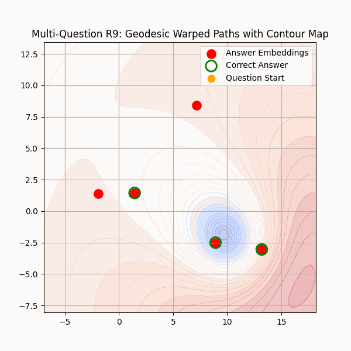

Introduction
Ngeodesic provides safety guardrails for AI with enhanced performance. Our Micro-LM sidecars act as a Layer 2 for AI: improving efficiency and reliability, enforcing determinism, auditability, and compliance — all while letting large language models remain fluent and flexible. For GitHub repos, you can visit:
Warp->Detect->Denoise (WDD)
Warp → Detect → Denoise (WDD) is a patented pipeline for making noisy latent spaces deterministic and auditable. It first warps embeddings into a stable geometry, then detects true signals with calibrated filters, and finally denoises phantom attractors. The result: reproducible PASS/ABSTAIN decisions with clear traces — turning stochastic LLM outputs into predictable, safe, enterprise-grade behavior.
{kind=link}
Micro-LMs
Micro-LMs are lightweight, domain-specific companions to LLMs that provide determinism, safety, and auditability. They focus on a narrow set of primitives (e.g., DeFi actions, ARC puzzles), mapping prompts into PASS or ABSTAIN with verifiers and traces. The LLM handles fluency, while the micro-LM enforces guardrails and compliance — the best of both worlds.
Micro-LM Sidecar
A Micro-LM Sidecar can be thought of as a Layer 2 for AI: it doesn’t replace the large language model, but it sits alongside it to improve performance, add safety guardrails, determinism, and auditability. In AI, the LLM is like Layer 1: broad, powerful, but stochastic and sometimes unsafe. A Micro-LM Sidecar is like Layer 2: lightweight, domain-specific, enforcing determinism and safety guardrails, but still “anchored” to the LLM’s fluency and reasoning power.
Request Cycle
User → LLM → /decide {prompt, context, policy}
↓
SBERT → PCA → map → θ → guards
↓
← {approve|reject|abstain, reason, plan, trace_id}
LLM explains/asks confirm
User confirms
LLM → /execute {trace_id, plan}
Sidecar re-checks guards → tools (if OK) → finalize trace
Workstream Breakdown
Note
Status icons legend — ✅ Built • 🟡 Partial • 🔴 Planning
Workstream |
Component |
Status |
% Effort |
% Done |
Description |
|---|---|---|---|---|---|
WDD R&D |
WDD |
✅ |
30% |
30% |
Research, math, validation of Warp → Detect → Denoise (ngf-alpha, DeFi/ARC, proofs). |
Core pipeline (R&D) |
Micro-LM |
✅ |
15% |
13% |
SBERT → PCA prototyping, thresholds, datasets. |
Core pipeline (Engineering) |
Micro-LM |
✅ |
20% |
17% |
Engineering impl. of SBERT → PCA/θ, integration with WDD-lite. |
Domain guards |
Micro-LM |
✅ |
10% |
8% |
HF / LTV / oracle freshness verifiers. |
Plans & policies |
Micro-LM |
✅ |
5% |
4% |
Primitive specs, per-class thresholds, policy defaults. |
Quickstart harness |
Micro-LM |
✅ |
5% |
4% |
In-process run + JSON outputs. |
Tests & canaries |
Micro-LM |
🟡 |
5% |
3% |
Smoke cases, threshold checks. |
API layer |
Sidecar |
🔴 |
4% |
0% |
|
Orchestrator glue |
Sidecar |
🔴 |
2% |
0% |
Routing, retries, caches. |
Observability |
Sidecar |
🔴 |
2% |
0% |
Logs, metrics, |
Audit trail |
Sidecar |
🟡 |
1% |
0.3% |
Structured traces, IDs. |
Ops safety |
Sidecar |
🟡 |
1% |
0.2% |
Warmup, kill-switch, double-gate at execute. |
Total % Done ≈ 85% (±5%).
Our first pilots are:
ARC Micro-LM → reasoning stress test (Abstraction & Reasoning Corpus).
DeFi Micro-LM → finance primitives with verifiers for safety and risk control.
If you are a researcher, developer, or just curious about deterministic AI reasoning, this guide will help you get started quickly.